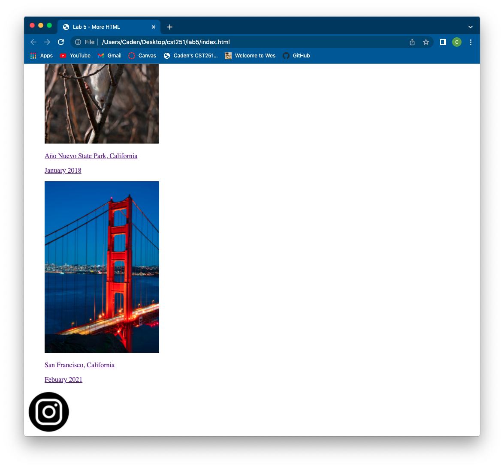
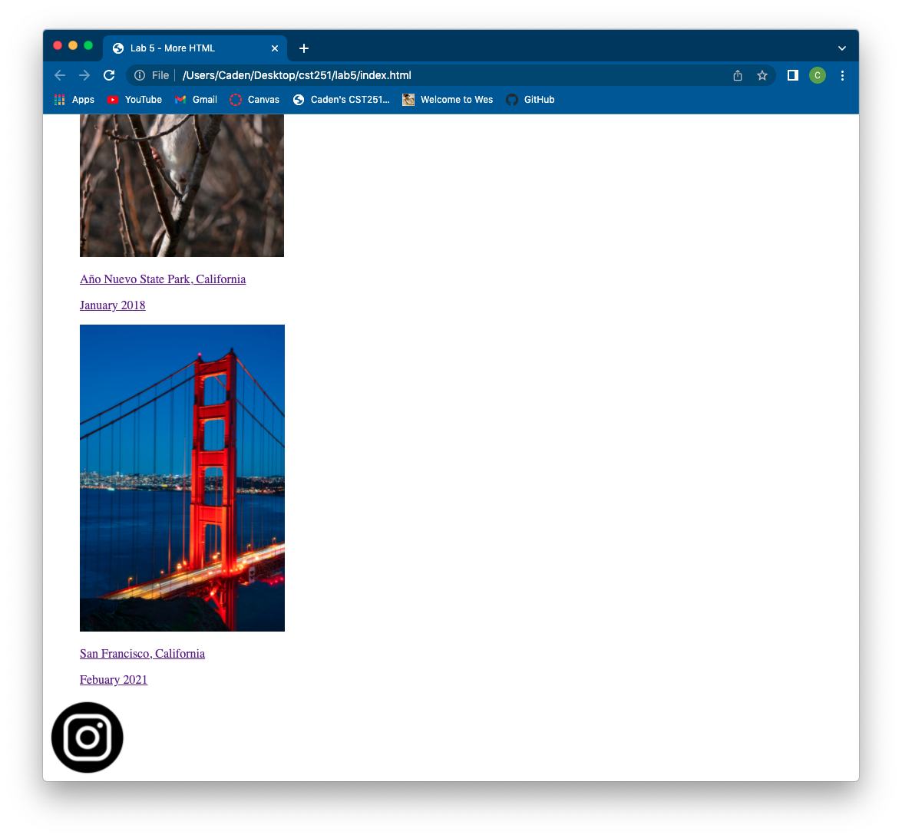

Bowling Ball Beach, California
March 2021
Bowling Ball Beach, California
March 2021

Bowling Ball Beach, California
March 2021

Montery Bay, California
April 2021

Año Nuevo State Park, California
January 2018

San Francisco, California
Febuary 2021
In this lab, I added some images of my photography and put captions below them. I added links to the Instagram post for most of the images. The photo of the yellow-flowered tree isn't posted and, therefore, doesn't have a link. Then, after the images, I added a PNG file of the Instagram logo and linked my page. This was the first lab in which I didn't have any difficulties.
 
Homepage

Homepage